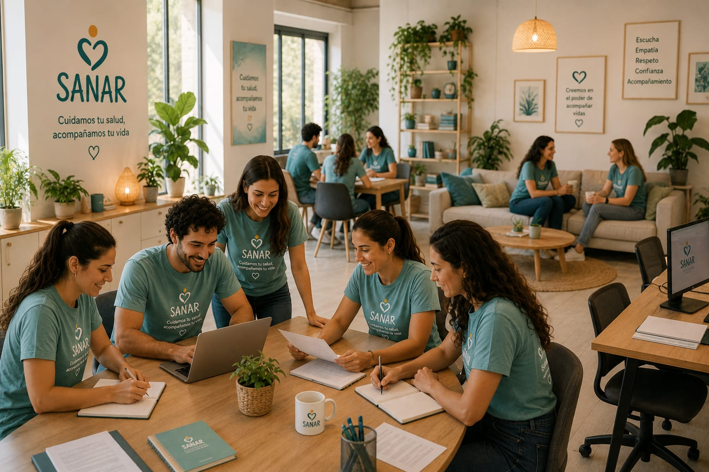

SANAR es una organización dedicada a la promoción de la salud mental y el bienestar integral de las personas. Trabajamos para generar espacios seguros donde cada persona pueda expresarse, ser escuchada y acompañada en sus procesos emocionales.
Nuestro enfoque combina acompañamiento profesional, actividades expresivas y trabajo comunitario, con el objetivo de mejorar la calidad de vida de niños, adolescentes y familias.


¿Cómo nace SANAR?
SANAR surge a partir de una problemática común: muchas personas no cuentan con espacios seguros para expresar lo que sienten o pedir ayuda emocional.
Frente a esta necesidad, nace la idea de crear un lugar cercano, accesible y humano, donde la salud mental sea acompañada sin juicios ni barreras.
Desde sus inicios, el proyecto busca integrar la escucha activa con herramientas prácticas para el bienestar emocional.
¿Por qué lo hacemos?
Creemos que la salud emocional es tan importante como la salud física, y que ambas deben trabajarse de forma integrada.
Muchas personas atraviesan situaciones emocionales sin herramientas suficientes, por lo que buscamos acompañar esos procesos desde la empatía y la comprensión.
En SANAR utilizamos recursos como el arte, la palabra y el movimiento corporal como formas de expresión y sanación emocional.

Nuestra Misión
Brindar espacios de acompañamiento emocional donde las personas puedan detenerse, reflexionar y comprender lo que sienten.
Nuestro objetivo es ofrecer herramientas que ayuden a transitar las emociones de manera saludable, fortaleciendo el desarrollo personal y familiar.
Nuestra Visión
Aspiramos a construir una sociedad donde la salud mental sea una prioridad accesible para todos.
Buscamos que expresarse emocionalmente no sea un tabú, sino una práctica cotidiana basada en el respeto y el acompañamiento.
¿A quién está dirigido SANAR?
- Niños y Adolescentes
- Familias
- Instituciones educativas y comunitarias
- Profesionales comprometidos con la promoción de la salud
Nuestro Equipo Profesional

Lic. Valentina Rojas
Psicóloga - Coordinadora del Area De Bienestar Emocional
Especialista en acompañar el desarrollo emocional de niños y adolescentes. Coordina programas de prevencion, orientacion familiar y esapcios de escucha

Lic. Martin Ferreyra
Psicopedagogo Coordinador del Programa Educativo
Diseña propuestas que favorecen el aprendizaje, la creatividad y el desarrollo de habilidades en los distintos talleres de SANAR.

Dra. Camila Benitez
Medica Pediatra Coordinadora de Promocion de la Salud
Promueva habitos saludables y acompaña actividades relacionadas al crecimiento, el autocuidado y la prevecion en la infancia y adolescencia.

Prof. Sofia Quiroga
Profesora de Expresion Corporal y Danza. Coordinadora del taller "Cuerpo en Movimiento">
Fomenta la expresion corporal, el trabajo en equipo y la confianza mediante actividades recreativas y de movimiento./p>

Lic. Nicolas Herrera
Trabajador Social. Coordinador de vinculacion Comunitaria
Fortalece el vinculo entre SANAR, las familias y las instituciones aliadas, impulsando proyectos de impacto comunitario.
Nuestros Aliados


En SANAR cuidamos tu salud, acompañamos tu vida.